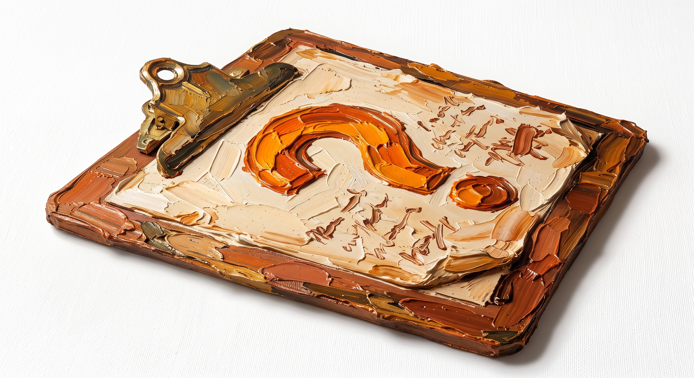

Інформація
Резюме – документ, в якому подаються короткі відомості про навчання, трудову діяльність та професійні досягнення особи, яка його складає.
Мета резюме – надати працедавцю короткий виклад своєї професійної діяльності та зацікавити його своєю кандидатурою.
Основна вимога до такого документа – вичерпність потрібних відомостей і лаконічність викладу. Резюме часто надсилають разом із супровідним листом, у якому висловлюється бажання отримати конкретне місце та пояснюється чому саме кандидат підходить на цю вакансію.
Структура резюме.
В резюме обов’язково мають бути наступні розділи:
- Прізвище та ім’я особи, яка складає резюме.
- Контактні дані.
- Мета працевлаштування або короткий текст про кандидата.
- Досвід роботи.
- Освіта.
- Ключові компетенції (навички).

Додатково, в резюме можна включити розділ про сертифікати, ліцензії, нагороди, додаткову освіту (курси, семінари, конференції), волонтерський досвід тощо. Головне правило при виборі, які розділи додавати – в резюме повинна бути лише релевантна інформація для конкретної вакансії.
Порядок розміщення розділів у резюме залежить від формату резюме і досвіду кандидата.
Оформлення резюме.
- За обсягом резюме не має перевищувати 2-х сторінок, а для кандидатів з відсутнім або невеликим досвідом роботи достатньо однієї сторінки.
- В резюме має бути чітка структура, кожен розділ має мати стандартну назву.
- Для опису обов’язків та навичок використовують списки.
- В Україні наразі заведено додавати фото в резюме.
- Рекрутери надають перевагу резюме в форматі PDF, тому що документи в цьому форматі будуть коректно відображатися на будь-якому пристрої та операційній системі.
Опис професійної діяльності
В резюме використовують професійну термінологію та інформаційний стиль для опису досвіду роботи. Описують в резюме лише релевантні для посади деталі. Потрібно уникати канцеляризмів та незрозумілих абревіатур в тексті.